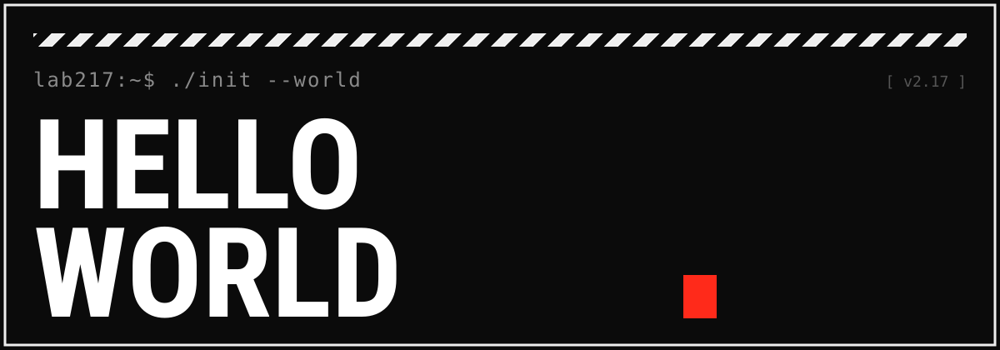
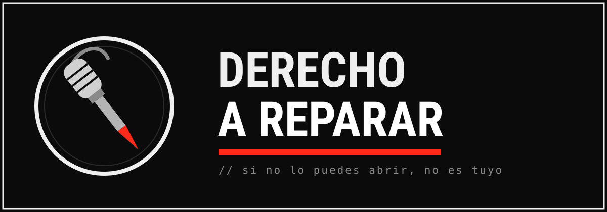
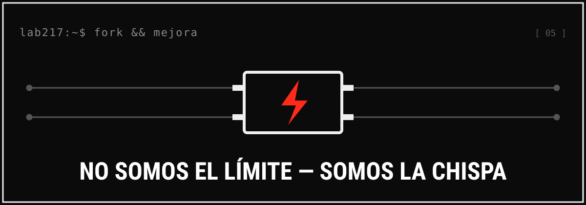

Hello World
Hello World es lo primero que escribe cualquiera que entra al mundo de la tecnología: el programa con el que das tus primeros pasos, la prueba de que ya estás dentro. Lo elegimos a propósito, porque funciona en dos sentidos: es nuestro saludo al mundo como colectivo y, a la vez, una declaración de lo que venimos a hacer. No es un trámite de principiante: es un manifiesto. Somos Lab217, un colectivo que fabrica hardware de seguridad abierto desde Latinoamérica, y este post es nuestro primer commit al mundo. No venimos a presentar una marca con logo brillante y términos de servicio; venimos a decir en voz alta algo que muchos pensamos a las 2am frente a una placa desoldada: el hardware de seguridad siempre fue caro, importado y difícil de conseguir, como si no fuera para nosotros. Lab217 existe para romper esa lógica. Si te laten la seguridad informática, el fierro que puedes abrir sin que te griten, y la idea de que una cosa es tuya solo si la puedes reparar, ya eres de los nuestros.

Un manifiesto desde el sur
Durante años el mensaje fue claro aunque nadie lo dijera con todas sus letras: el hardware de verdad venía de afuera, lo elegían otros y a nosotros nos tocaba pagar el sobreprecio, la aduana y la espera. Nuestro manifiesto empieza por negar eso. Somos de acá, construimos de acá, y creemos que cualquier persona con curiosidad y un cautín debería poder armar, modificar y publicar su propio hardware de seguridad sin pedirle permiso a nadie. Lo vimos cuando soltamos los esquemáticos y el firmware de Cerberus bajo licencia MIT: en lugar de una caja negra sellada, pusimos cada pin a la vista para que lo leas, lo entiendas y, si quieres, lo hagas irreconocible. Así que empieza por lo más simple y lo más rebelde que puedes hacer hoy: antes de soltar la lana por cualquier gadget importado, revisa si tiene documentación abierta o comunidad detrás, porque lo que no puedes leer tampoco lo controlas.
El hardware de seguridad no debería ser un privilegio

Acceso radical: si existe, es tuyo. Sin DRM, sin licencias absurdas, sin región bloqueada. Suena a eslogan, pero es la bronca más vieja del taller, y tiene un costo que se puede medir. Solo en 2022 el mundo generó 62 millones de toneladas de basura electrónica (Global E-waste Monitor 2024) y apenas el 22% se recicló de manera formal; buena parte de esa montaña existe porque reparar y modificar fue diseñado para ser imposible, y porque cuando algo no se consigue aquí, simplemente se tira y se vuelve a comprar afuera. Pensamos en el estudiante que no puede pagar un dispositivo de pentesting de marca extranjera, o en el maker al que la aduana le detiene la pieza que necesita: para ellos el acceso no es un lujo, es la diferencia entre aprender o quedarse fuera. Por eso todo lo que hacemos es público, y por eso vale la pena que tú también te entrenes en abrir antes de reemplazar —la próxima vez que algo "se muera", destápalo, porque la mitad de las veces es un capacitor de dos pesos y no un pretexto para comprar de nuevo.
Si no te lo envío, lo construyes
Esta es, quizá, la frase que mejor nos define: ninguna frontera logística detiene a alguien con acceso a internet y ganas. No siempre vamos a poder mandarte una pieza —las fronteras, los envíos y los permisos existen y a veces ganan—, pero lo que sí podemos garantizar es que los diagramas están, el firmware está y el conocimiento es libre. Lab217 fabrica herramientas, pero sobre todo fabrica hackers, y un hacker con el esquemático en la mano no necesita que le llegue el paquete. Lo vivimos de primera mano cuando alguien, en vez de esperar nuestro flasher, lo armó desde cero con nuestros diagramas y nos devolvió una versión que soportaba chips que ni teníamos en el banco. Si quieres caminar por ahí, levanta un entorno que sea cien por ciento tuyo —una Raspberry Pi vieja arrumbada o una VM— y rómpelo a gusto, con una sola regla de oro que no se negocia: solo tocas hardware y redes que te pertenecen o para los que tienes permiso explícito por escrito. Curiosidad con ética, siempre.
Toma el manifiesto y hazlo tuyo
Más que fotocopiarnos, lo que queremos es que tomes el control de tu propia tecnología. Lab217 no es una iglesia con dogma: es una excusa para que agarres tu teléfono, tu router, tu laptop o esa consola que sientes que no te pertenece del todo, y te los reapropies. Flashear tu router con OpenWrt, correr una ROM libre, cambiar KiCad por esa suite propietaria carísima, documentar la reparación que nadie quería que supieras hacer —eso es el manifiesto en acción, y no necesitas nuestro permiso ni nuestro logo para hacerlo tuyo. Si algo de lo que decimos te prende, róbatelo, mézclalo con tus propias ideas y hazlo circular por el medio que se te dé la gana: un repo, un hilo de foro a las 3am, un video, un fanzine engrapado, una plática en tu comunidad o un grupo de Telegram. El conocimiento encerrado se pudre; el que circula se compone. Así que elige una sola pieza de tu vida digital que hoy no controles, recupérala este mes y cuéntale a alguien cómo lo hiciste —ese es el commit más barato que vas a hacer por tu libertad, y por la de quien te lea.
No somos el límite, somos la chispa

Lo decimos sin pena: no queremos clientes cautivos, queremos gente que nos supere. El mejor uso que le puedes dar a algo de Lab217 es desmontarlo, mejorarlo y publicar lo que encontraste; el objetivo nunca fue que dependas de nosotros, sino que dejes de depender de nadie. Un taller de una sola persona es un hobby, pero una comunidad es un movimiento, y la chispa no sirve de nada sin el fuego que la comunidad pone encima. Imagínate la escena que soñamos: alguien en otra ciudad toma un diseño nuestro, lo vuelve irreconocible, le mete una mejora que no se nos habría ocurrido y lo sube para que un tercero lo tome mañana. Eso es el ciclo entero funcionando. Y puedes meterte en él esta misma semana sin ser experto: elige un proyecto abierto que ya uses y hazle una contribución mínima —reporta un bug con pasos claros, corrige un typo en la documentación, responde una duda—, porque nunca sabes cuándo vas a empujar justo el commit que a alguien más le faltaba.
Cierre: el primer commit de muchos
Esto es apenas el init del repositorio. Lo que sigue son bitácoras de fallas reales, desarmes, análisis de firmware, lanzamientos de hardware propio y fanzines sin filtro ni corporativos de por medio. Nada de humo, nada de cajas negras: fierro que puedes abrir, software que puedes leer y conocimiento que puedes compartir y llevar más lejos que nosotros. Si leíste hasta aquí, ya tienes tarea: abre algo, rómpelo con cabeza, arréglalo y cuéntalo. Nos vemos en el siguiente push.
Ningún candado aguanta a una comunidad con ganas de entender.